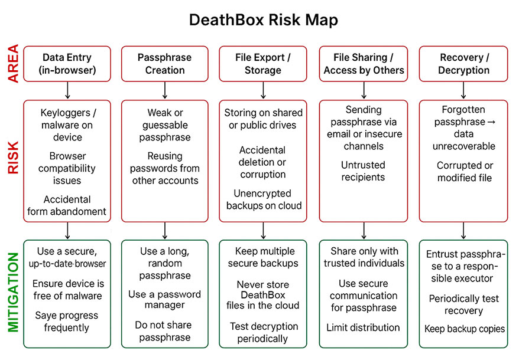

This website does not work without JavaScript. Please enable and refresh the page before continuing.
Too often, the people you leave behind are left guessing. They may not know how to access your devices, manage your online activities or finances, or even who your closest friends were and which people, places and things mattered most to you.
They might also be unsure of your medical history, where your passport is, or who's going to take care of your dependants, pets, home, car and garden when you're not around. Your DeathBox is also a great place to list your favourite books, films, music, colours and foods, and to leave instructions for how you’d like your funeral or burial to be arranged.
The more information you provide, the easier it will be for your nearest and dearest to manage your affairs and understand who you were.
Your death should also be a celebration of your life, and aside from the practical stuff, the things you place into your DeathBox should reflect that.
Heads up! This form could take a very long time to complete. We strongly recommend preparing all the information you need before entering it here.
The only required fields are your name and the details of the person you appoint to open your DeathBox. Just complete the sections that are relevant or comfortable for you.
For convenience, you can save your progress to an encrypted file and then resume at a later date by using the options below the main form.
You will lose all information if you refresh or reload the page without saving your progress.
If somebody has entrusted with their DeathBox and they've recently passed away, you can decrypt it below. You'll need both the encrypted file and the passphrase to unlock it.
For more information about DeathBoxes, especially regarding security concerns, please read the FAQ.
This section shows your progress and allows you to save your DeathBox to an encrypted file. You will need to come up with a secure and memorable passphrase to protect your file.
This action will not modify or reset the main form above.
This option allows you to select an encrypted file and resume a session. The form will be populated with its contents so you can continue from where you left off.
This action will REPLACE ALL FIELDS in the main form above!
This option is generally used when you've finished providing all of your information.
For legal validity of 'Last Will and Testament': Download an unencrypted version, print the PDF, and sign with two witnesses. Store it in a safe place (e.g. bank, safe or strongbox).
For secure sharing: Send the encrypted file and passphrase to your trusted person, or tell them how to find and open it. You might want to do this immediately – we never know what's around the corner and you need to ensure it can be accessed if something unexpected happens to you.
Important: If you choose to encrypt your file, you'll need to provide a secure, memorable passphrase to protect it.
An encrypted DeathBox without a passphrase is useless.
This action will RESET ALL FIELDS in the main form above!
If you have been entrusted with somebody's encrypted DeathBox and that person has now died, this section will allow you to decrypt it and save it as a PDF file.
This action will not modify or reset the main form above.
Downloading a copy of the DeathBox source code will allow you to not only perform offline processing (including encryption/decryption), but also to validate the source code for added reassurance.
You will need to download a number of files, including JavaScript, stylesheets, fonts and images, for the application to operate and render correctly on your local server.
If your local environment does not operate under a SSL/TLS certificate, you may experience cross-browser security warnings. This is unavoidable due to modern browser security requirements. Your browser may also block the fonts loading, but this shouldn't affect the app's functionality.
Download a zip file containing all of the necessary files/folders using the link below (right click and choose 'Save Link As...' to download).
Step 1: Download the above zip file and extract it to your local device. After completion, you should have a file/folder system similar to the one shown below.
Step2: Open the index.html page in your browser to run the application.
Here's the file and folder structure:
Let's be real – if a malicious individual got their hands on your DeathBox and managed to read its contents, it could potentially ruin multiple lives, and your own death. Seriously. Your identity could be stolen, homes and property lost, loved ones kidnapped, bank accounts emptied, relationships destroyed and all manner of hell unleashed. Or worse.
Once you've completed the form, entered a passphrase and downloaded your encrypted PDF, make sure you keep it in a secure place, and preferably backed up.
For your DeathBox to be accessible after you're gone, you'll also need to give your passphrase to at least one other person who has the means to visit this webpage (or a local copy of it) and upload the encrypted file. An encrypted DeathBox file or PDF without a passphrase is pretty much useless.
Basically, your DeathBox is only as strong as the passphrase you use to encrypt it, the confidence you have in those you entrust it to, and the integrity of the device you store it on.
I appreciate the highly sensitive nature of the information you provide, and as such, all processing is undertaken within your browser. No third-party cookies are used and absolutely no data whatsoever is stored or transmitted beyond your computer and this page (this page does not use cookies either).
There is no tracking, no back-end database, no server-side processing and no surreptitious storage other than the files you explicitly choose to encrypt and download. Your IP address is of no interest to me, and nothing you enter here is recorded, not even in a log file.
Building your DeathBox is a wholly client-side process, that's to say it happens on your computer. Once your browser has finished loading this page – which includes the HTML, five JavaScript files, a stylesheet, a couple of fonts and favicons (the small icon on the browser's tab) and the logo image (for a total of 12 items, or 13 if the logo is cached) – there are no more HTTP requests. Zero.
The HTML form itself has no action defined, so it literally doesn't submit anything at all (including uploads). The application takes your form responses, compiles and encrypts them into a file, then prompts you to download it. The browser's memory is then cleared and the form is reset.
You can check out exactly what's going on by opening your browser's developer console (F12) and taking a look at the network, memory, storage and cookie sections.
I've gone to some lengths to lock down the security of this website's headers and content. If you're technically minded and know what you're looking at, you can analyse deathboxes.co.uk yourself via the links below.
When you download a PDF or save your progress, the file is encrypted using military-grade SHA-512 hashing, based on a passphrase that you need to provide. To decrypt a file, you (or somebody else) will need to visit this page, enter your passphrase and re-upload the file using the appropriate function.
There is an option to download an unencrypted PDF, but we strongly recommend against doing so for obvious reasons. However, if you need the 'Last Will and Testament' section to be legally valid, you'll need to download an unencrypted PDF, print it out and sign the appropriate sections along with two witnesses.
I've run a basic security audit of DeathBoxes using ChatGPT. The results are unsurprising but nonetheless worth a read. You can download it here:
DeathBox-ChatGPT-Security-Audit.docx (~23KiB)
Below is a risk map that ChatGPT also generated.

For full transparency, you are more than welcome to download the source code of this page via the option below the form. Downloading the source code will also allow you to run the application on your local computer or server (ideally using SSL/TLS).
All that said, I take absolutely no responsibility for the information you enter here, its validity, or any consequences resulting from its misuse, mishandling or unauthorised access. What you do with the contents of your DeathBox is wholly down to you. You have been warned.
If somebody entrusted you with their encrypted DeathBox without providing a passphrase, or it's been lost or forgotten, I'm afraid there's nothing that can be done. DeathBox files are encrypted using SHA-512 hashing – a one-way process that cannot be bypassed. Passphrases are never saved to a server so there's absolutely no way to recover them.
There may come a time when deathboxes.co.uk is no longer operating. The best thing to do to avoid such an eventuality is to download a copy of DeathBoxes to your local computer. I also intend to put the project on Github for public access. Watch this space!
Me, Russell McVeigh. I'm an editor, developer and musician. And I'm 100% human according to those around me. I'm also somewhat addicted to designing and building little online worlds and applications that most people never see. I thought I'd put this one out there as it's a ridiculously simple idea and was fairly easy to set up. Another one of my pet projects is Kung Fu Haiku, which has now been pottering along since 2008.
Yes, creating your own DeathBox is absolutely free. You're also welcome to download the application and use it offline. However, it is copyrighted, so I'd really appreciate it if you didn't clone it, sell it or claim it as your own.
If you've found the application useful and are in a particularly generous mood, feel free to drop me a PayPal donation.
There is no advertising whatsoever on DeathBox (aside from the odd hyperbolic phrase). My sole driver for developing it is altruism – to provide what I consider to be a genuinely useful service, totally free of charge. And besides, placing ads would completely undermine visitor trust.
From what I understand after a cursory Google, if you want the 'Last Will and Testament' section to be legally valid, you'll need to download and print a non-encrypted PDF and physically sign the appropriate sections (along with two qualified witnesses). Be sure to keep the paper copy in a secure, memorable place (we recommend a safe, bank or a locked, fireproof strongbox). If in doubt, always consult a lawyer or legal professional.
By all means! I've tried to provide as many options as possible without overdoing it. If you have suggestions for extra fields or additional functionality, please feel free to get in touch with the specifics. I can't promise to I'll implement any suggestions, but I'll definitely consider them.
First up, thanks for spotting it. If you think you've found a bug that isn't due to user error, I'd be more than happy for you to get in touch so I can take a closer look. The website first went live in November 2025, so there could still be a few gremlins lurking.
If you wish to raise a legal issue, please put it in writing, along with your full name, and send it to hello@deathboxes.co.uk.
There is currently no dedicated smartphone application for DeathBoxes. It's a really simple website, so it seems pointless to develop a separate app with exactly the same functionality.
Maybe. I'm not sure to be completely honest. I'm an atheist, but much like C. S. Lewis's dichotomy, I've found myself at odds with the idea of a universe that isn't steeped in some kind of deeper meaning, mystery or even magic.
Death has long been regarded as one of life's profound mysteries, so my idea to create DeathBoxes may have simply sprouted from that latent fascination. Paradoxically, when you lose someone dear, you begin to learn how to understand — or compartmentalise (literally in this case) — the ineffable.